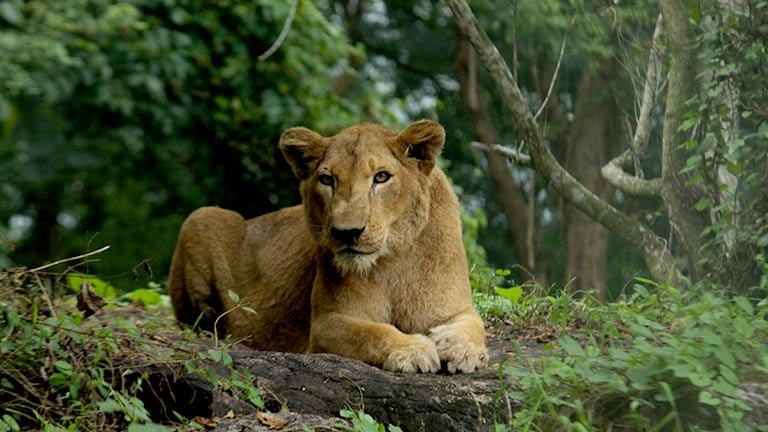
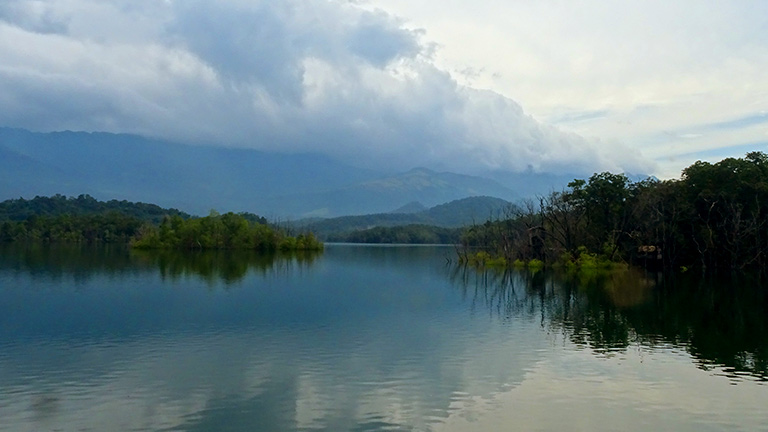
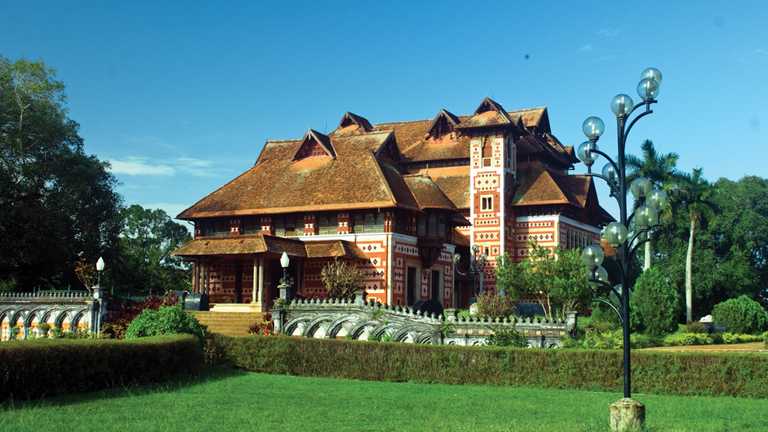
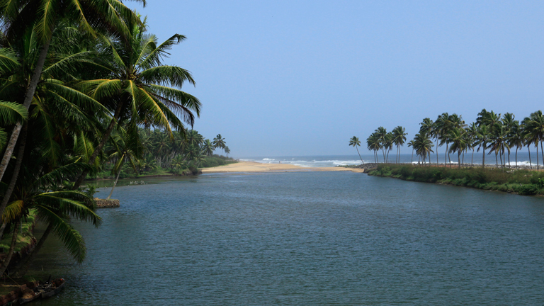
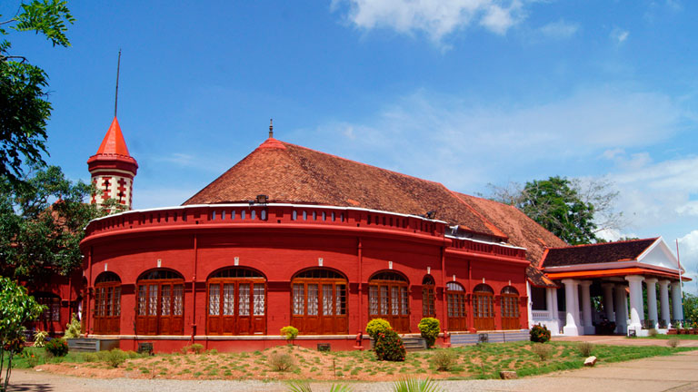
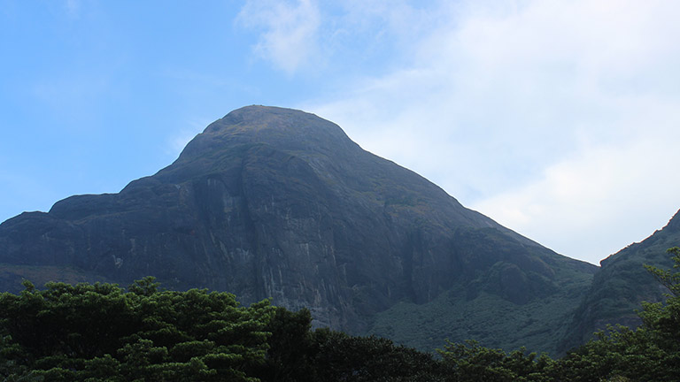

Home
(current)
Explore
Districts
Adventure
Holiday Packages
Cusines
Heritage
The Wild
Reviews
Destination
WaterFalls
Beaches
Museum
Contact Us
Sign In
Search
TRIVANDRUM
The southern tip of God’s Own Country is home to the administrative and cultural hub of the State, Thiruvananthapuram. From a landscape naturally endowed with some of the most picturesque visuals possible along with culturally relevant holy sites that have thrived for more than a thousand years, this area has something for everyone. Young and old alike, all can experience their own slice of Kerala here, tailor-made to their individual preference. Listed below are some of the most prominent places of interest in the State capital.
How to Reach:
Bus
Trivandrum is well connected to all the major towns and cities by regular bus services. The bus station is located right next to the Trivandrum railway station. Kerala State Road Transport Corporation (KSRTC) operates 6 class of services connecting Trivandrum to southern Tamil Nadu and all the parts of Kerala.
Train
The biggest and the main railway station in Trivandrum is the Trivandrum Central railway station. Many trains connecting other important stations are available during all the hours of the day. The Trivandrum railways station is the third largest in South India.
Flight
Trivandrum has its own airport, both domestic and international. This airport is well linked to all the other main domestic as well as international airports. You can hire a taxi from the airport to reach your destination in Trivandrum.
Places to Visit
Padmanabhaswamy Temple:
One of the 108 Divya Desams, Sree Padmanabhaswamy Temple is located in Thiruvananthapuram, the capital city of Kerala. Embellished in gold-plated covering, the temple is opened only to Hindu followers. Dedicated to Lord Padmanabha; one of the avatars of Lord Vishnu, the Padmanabhaswamy Temple is one of the principal centres of Vaishnava worship in the dharma of Vaishnavism.
Neyyar Dam & Wildlife Sanctuary:
Famous for its Lion and Deer Safari, Neyyar Wildlife Sanctuary is a treat for nature enthusiasts. The park houses a crocodile farm and elephant rehabilitation centre. Ask for a guided tour of the sanctuary which is quite informative.
Poovar Island:
The most beguiling Poovar Island, located just 30 km away from Trivandrum, Kerala or the God's own country, is the abode of natural beauty. Known for its pristine charm, the island is flocked by peace-lovers. Also known as the fishing village, the tranquil island lies between the Arabian Sea and the Neyyar River.
Agasthyakoodam:
Agastyakoodam, also known as Agastya Mala Peak is the second highest peak in Kerala with an extensive height of 1868 metre. Located within the premises of Neyyar Wildlife Sanctuary, Agastyakoodam is part of the Agasthyamala Biosphere Reserve and boasts of surreal natural beauty. Nestled in Sahyadris of Western Ghats, the slopes of the peak are carpeted in purple hues of orchids
Gallery





